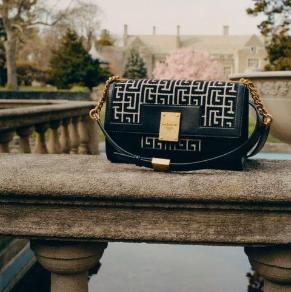

What to wear to embrace fashion's new Renaissance. As for what makes a 1945 one bag—nay, the bag—to have and to hold as we flit around town (be it the Paname, Manhattan, or anywhere in between)? To begin, with a plethora of shapes and sizes to choose from, there’s a pitch-perfect option for everyone. Take your pick: detachable burnished gold chains for wearing over-the-shoulder, arrive in petit, ...
There isn't a singular definition of what makes a mom "cool," but we tried our hand at picking gifts for those who embody the term and deviate from typical mom norms. Think sausage grinders instead of cookie trays, Ella Mai over the oldies, and CBD candies for moms who are fine with extracurricular activities...